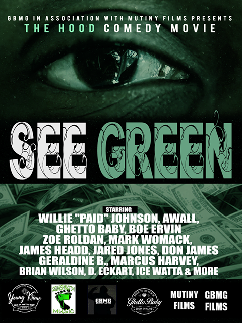
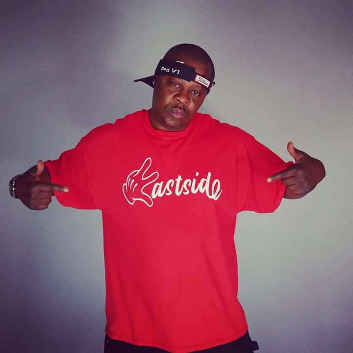
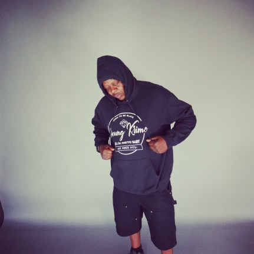
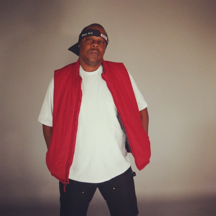

Welcome to the Official online site of G.B.W.W. Entertainment and home to our CEO founder and creator The Underground Legend Young Krime aka Da Ghetto Baby When it comes to a Tacoma sound: 1 thing the city has is grime, toughness, roughness, raw,
uncut, street, real, you get the picture. One of the innovators and originators of this ethos is Young Krime aka Da Ghetto Baby . Young Krime has been at this professional Hip-Hop thing for well over 25 years. He is one of the first successful
rappers from the North West region. He has always stayed active and relevant but as far as actually dropping new albums it has been ten years. He has recently dropped two new songs and videos the first titled “Fact of the Matter” and it features
Shaheed he also Dropped His song "Who's Gunna Stop Me". These are the first 2 singles off Krime’s new album Both videos are available to watch on our YouTube Channel G.B.W.W. Entertainment. We are set to release the long over due "2020 T.R.O.Y.
Files" the new Album from the Underground Legendary Artist Young Krime aka Da Ghetto Baby his new Album features Creo Love,Big Real,Z Capone and Shaheed with Production by J- Uno,Jp Bangz,Ant Beatz,Bear OnThe Beat,Kamoshun,Texas Dolla,Music Dae
and Big Bad Wolf This Album will be followed by The Young Krime 2Real 4Rap Album and Documentary The Album features The Gas Team, Lil KeKe Tha Don ,Ricky D ,Sauce Gordon,Littoral,K. Edwards, San Quinn The exclusive DVD will Document the Life and
Music career of Young Krime aka Da Ghetto Baby with exclusive behind the scenes footage, concert performances and more 2Real 4Rap Album and Documentary Also Be on the look out for the up coming hood comedy movie "Eye See Green".
sdfasdf




